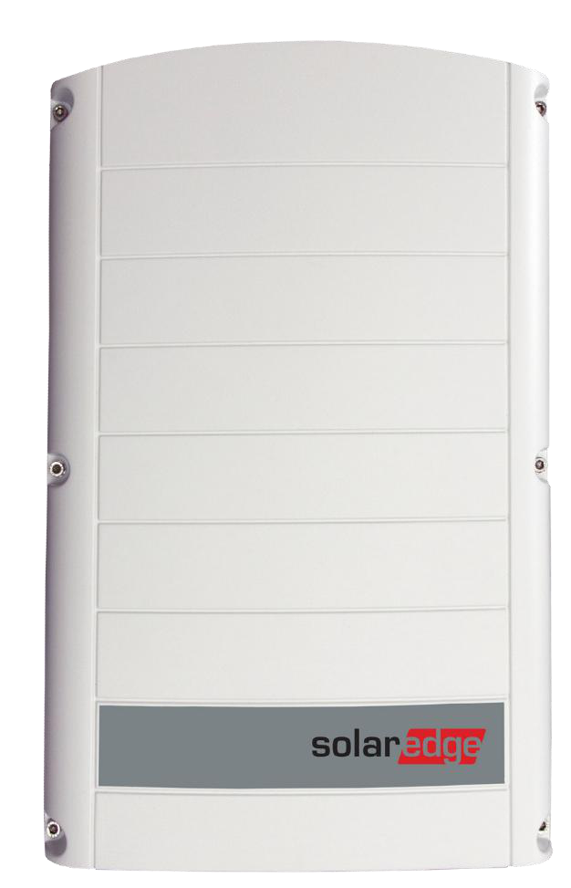

HOME WAVE THREE-PHASE + S-SERIES OPTIMISERS
SOLAREDGE THREE-PHASE QUOTATION
Three-phase solar,
every panel on its own
SolarEdge Home Wave three-phase inverter with an S-Series power optimiser on every panel.
Three-phase 400 V3 / N / PE connection for three-phase homes and buildings.
Panel-level monitoringBuilt-in module-level monitoring of every panel.
Fixed-voltage inverterFixed DC voltage, made for longer strings of panels.
Arc fault protectionIntegrated arc fault protection, built into the inverter.